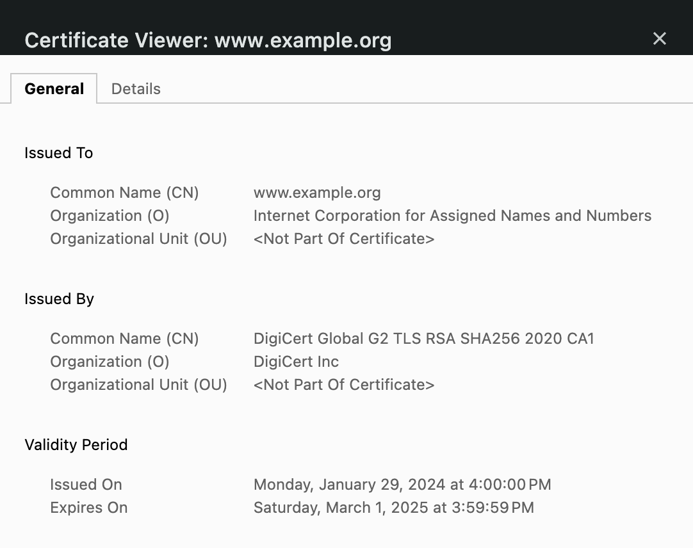
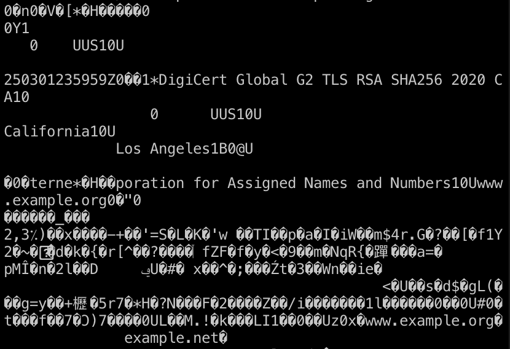
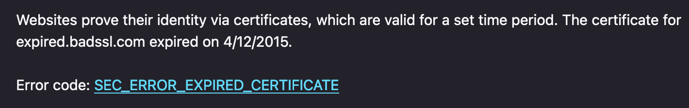

March 3, 2024
TL;DR: Certificates are data structures that include a public key, a digital signature, and some other data. Clients use certificates to authenticate servers during TLS handshakes.
Disclaimer: This post contains only my personal knowledge and opinions, and I'm not writing on behalf of anyone else, including the company I work for.
TLS certificates are used to authenticate endpoints. They allow you to be reasonably confident that you're connecting to the website you think you're connecting to. Your browser received a certificate shortly before it received this sentence. You should be able to find the certificate for a website if you click one of the icons on the left side of the address bar and drill down into the menu.
This is the human-readable representation of a certificate, which is actually a binary data structure encoded in ASN.1. If you were to cat out a raw certificate in a terminal, you'd mostly see a bunch of garbage:
As you can observe from the human-readable version, a certificate contains a bunch of information like the name of the endpoint, when the certificate was created, and so on.
Like a lot of things in security, people usually aren't aware of the existence of certificates unless something goes wrong with one of them. When that happens, your browser displays a full-page error like this:
Certificates are sent during the TLS handshake, the initial, negotiation phase of a TLS connection. In a typical connection on the web, TLS lies above TCP and encrypts everything above it, which is usually HTTPS. TLS (or Transport Layer Security) began life as "SSL," or Secure Sockets Layer, at Netscape in the 1990s. It was renamed "TLS" when it became a standard at the Internet Engineering Task Force (IETF), a standards body. Because certificates really took off with SSL, you'll still commonly see them referred to as "SSL certificates."
The TLS protocol specifies when and how you should send a certificate, but it leaves validating the certificate (determining whether the certificate is trustworthy) up to the client. (It also leaves this up to the server in the case of "mutual TLS," whereby the client also sends a certificate, but I'm going to focus only on server certificates in this article.)
You may be wondering: but I did a DNS query and got an IP address for example.com; how could I be talking to anything but example.com? You know how when you're in an airport and connect to their WiFi, and no matter which webpage you navigate to, you're redirected to the airport's WiFi welcome screen? That's effectively a man-in-the-middle (MITM) attack, whereby something captures the communications between you and your intended party. You're attempting to navigate to example.com, but instead of happily forwarding your packets on to example.com, the airport's WiFi access point directs your traffic to a server that the airport controls. An attacker could do the same thing, only the server you're directed to could be a spoof of the very website you're trying to reach—say, your bank's website—and without certificates to help you determine whether it's your bank's actual website, you could end up sending this spoofed website your banking credentials.
So let's say a server you're hoping is example.com transmits a certificate to you. How can the certificate possibly prove that the entity that sent it is, in fact, example.com? Let's pretend for a moment that this certificate is just the string "I am example.com." This string isn't very convincing because any attacker could send that. What could example.com send us that would be more convincing? To answer that question, we first have to delve into public key cryptography.
You may be familiar with kids' puzzles where you encrypt something by swapping one letter with another, e.g. CAT becomes MRP if you swap C for M, A for R, etc. This is called a substitution cipher. Since you use the same key for both encryption and decryption, this key is called "symmetric." (In this case, the key is the mapping from one letter to another.) There is a major problem with symmetric keys: how do you get them to your intended recipient in a secure way? You could hand them keys in person, but that's really inconvenient.
So in the 1970s, a few cryptographers came up with "public key cryptography," whereby I can give a "public key" to anyone, including malicious adversaries. If you encrypt something with my public key and send me the ciphertext, I can decrypt the ciphertext with a key I keep secret, which is called a private key.
We can also do the reverse of this operation: if you give me an arbitrary message, I can perform the decryption algorithm with my private key on that message, then send you the resulting ciphertext (which we call a digital signature). Then you can perform the encryption algorithm with my public key on the signature to see if the result matches the unencrypted message. If it matches, you can be reasonably sure that I possess the private key associated with the public key I gave you. This scenario provides exactly what we need for example.com: a way to associate a message with the identity of its sender, just like a regular, hand-written signature.
Let's imagine that you meet with the owner of example.com in person, and they physically hand you a USB stick that contains their public key. Then you go home and attempt to connect to example.com. During the connection, you send a message, and the server you're connecting to sends back a digital signature of this message. You use the public key to verify that the digital signature is valid, and voilà! You can reassure yourself that the entity you've connected to has example.com's private key and thus is most likely indeed example.com.
However, it would be really annoying to have to meet with all the owners of the various websites you want to visit to get their public keys. So what if there were someone who was willing to do that for you? What if a trusted third party gave you their public key, and they flew all around the world signing website owners' public keys, so that when you connected to example.com, you got the following:
You would then be able to:
However, this would obviously still be very annoying for both the trusted third party and all the website owners. The way that these third parties (certificate authorities, or CAs) check whether something has a particular private key and controls a domain is usually automated: the CA sends a long, arbitrary string to an entity claiming to be example.com, then the CA checks whether that entity placed that string at a particular URL or in a DNS record that example.com is expected to have control over. This process is called "domain validation."
You may be wondering: if a CA can check whether something is example.com, why couldn't I do that myself in the first place? If our threat model includes the fact that an attacker may have control over your network, there's no way for you to do this check and have any confidence that you're actually checking the real example.com. We assume that a CA, however, is not getting MITM'd when they validate a website's domain. This is admittedly a pretty big assumption, which is why some CAs check DNS records from several different vantage points.
Some certificate authorities also do additional validation like "organization validation," whereby they attempt to check whether the entity that's requesting the certificate is the organization they claim to be in a human, real-world sense. However, this additional validation is of dubious value (which is a subject for another blog post).
Having to deal with a bunch of public keys can get rather cumbersome: they're intentionally as random as possible and contain no information like whom they belong to. Certificates solve this problem: in addition to a public key, they contain the name of the entity associated with that public key, the name of the CA that signed the certificate, and the CA's signature over all that information. It's called a certificate because it certifies something: server certificates certify that a CA checked that the hosts at the domain(s) listed in the certificate have the private key associated with the public key in the certificate. And like certificates in the real world, this certificate has a signature.
The CA gives you their public key in the form of a certificate as well, but in this case, it's "self-signed," meaning the signature attached to it was made by the private key associated with the public key in the certificate. This type of certificate is called a "root" certificate because it forms a root of trust: nothing vouches for the trustworthiness of this certificate but your faith in it, and everything that certificate vouches for depends on the trustworthiness of that certificate. This means that you want to get this root in the most secure manner possible. They're usually baked right into operating systems and browsers. If you have macOS, you can open Keychain Access and see all the roots your system trusts by default.